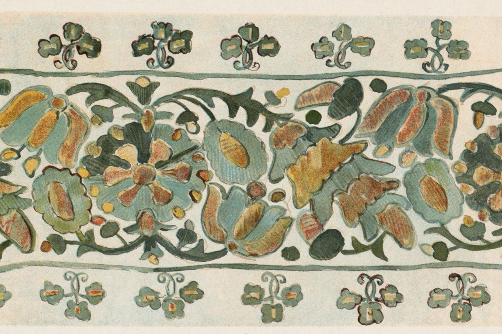

Undoing Empire, One Plant at a Time
Harvard Map Collection
·
Kelly O'Neill
·
Oct 3, 2023
·
1 min read
 Floral motif from Ukrainian textile produced in 1902.
This year, the Harvard Map Collection partnered with Kelly O’Neill from the Davis Center on a project to demonstrate the value of our GIS data curation services . Dr. O’Neill’s project aims to capture data about historic biodiversity in the Ukraine. The Harvard Map Collection worked with her team to co-develop robust and useful metadata, so that the sources can be archived for long-term discovery and reuse.
You can learn more about the project in this Davis Center article .
This project was funded by an Advancing Open Knowledge grant from the Harvard Libraries.